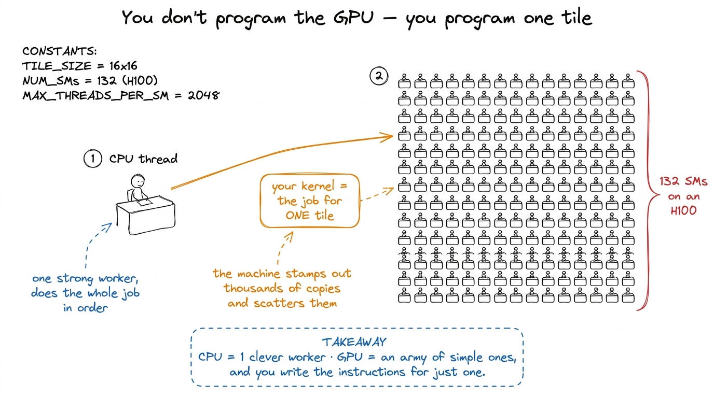
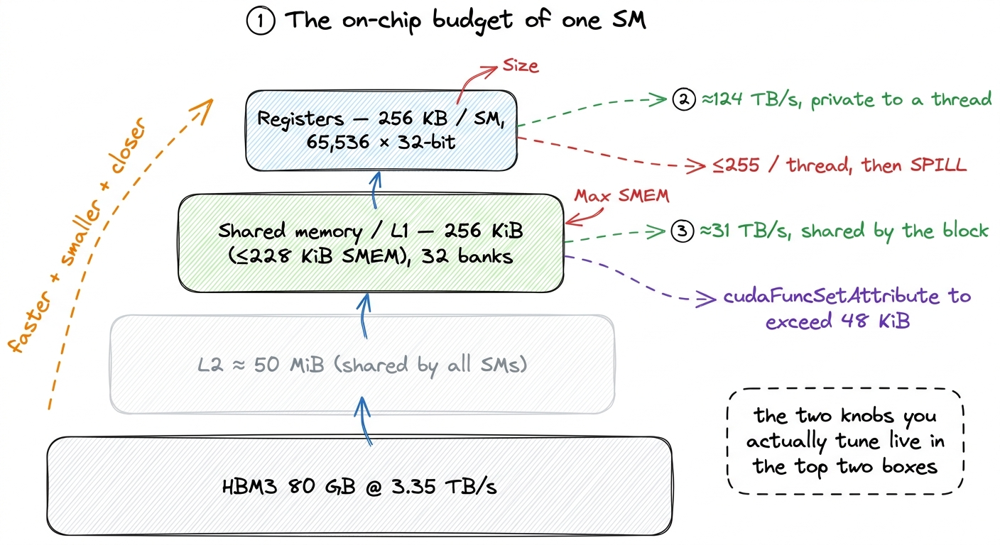
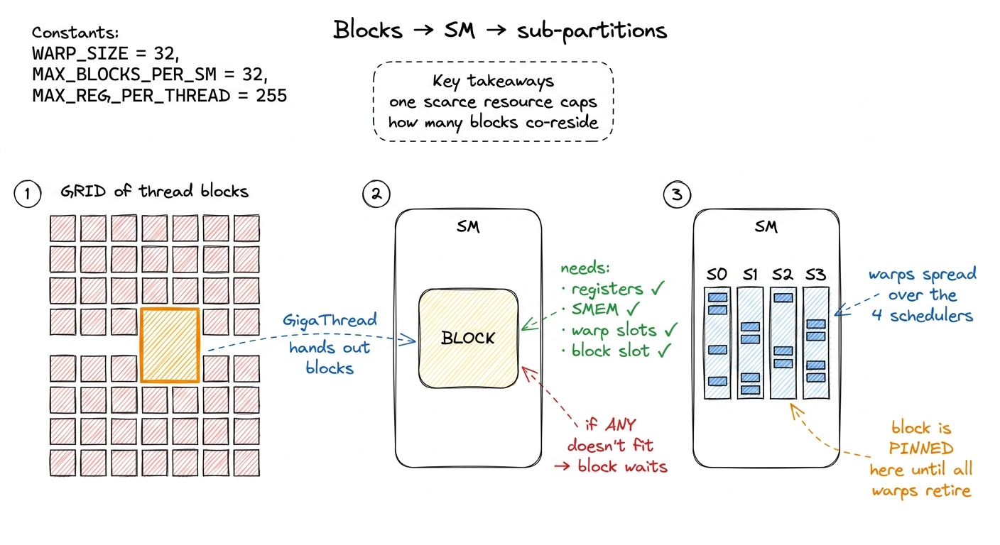
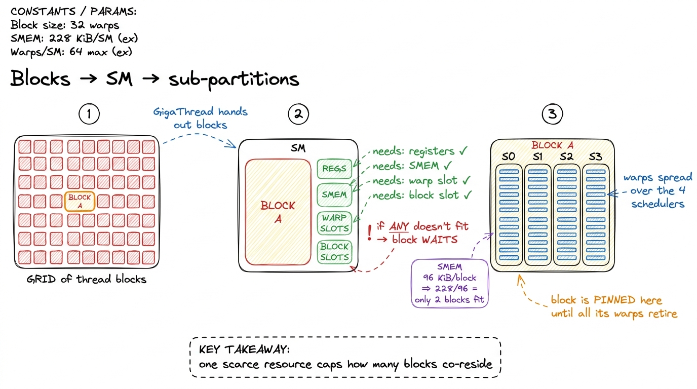
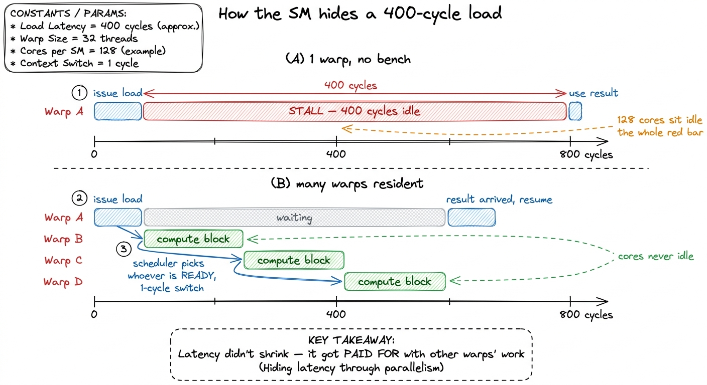
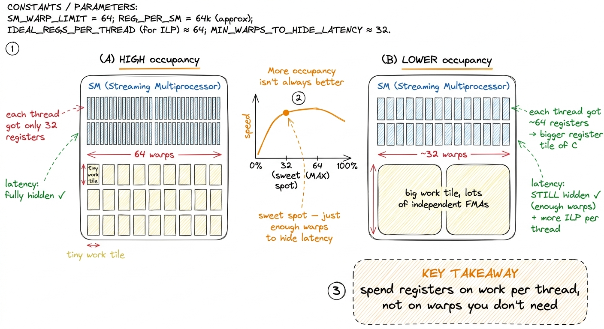
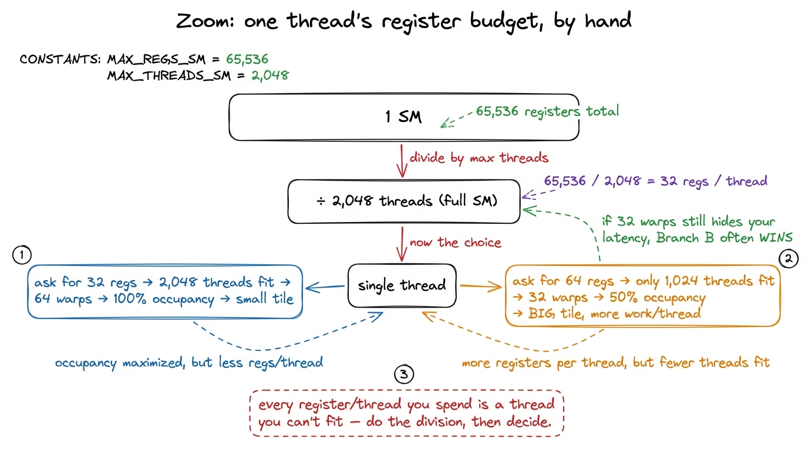

The Streaming Multiprocessor SM
Let me start with a question that sounds simple but has a surprising answer: when you write a CUDA kernel, what machine are you actually programming?
The instinct is to say "the GPU." But that is not quite right, and the gap between that instinct and the truth is the single most useful thing to fix before we write a line of code. You are not programming an H100 the way you program a CPU — one big brain that you hand a stream of instructions. You are describing the work of one small tile of the problem, and then trusting the hardware to make thousands of copies of that description and spread them across a field of little engines that all run at once. Those little engines are called Streaming Multiprocessors (SMs), and this whole article is about what one of them is, what it can and cannot do, and why understanding this one box will explain almost every performance decision you make for the rest of the course.
So here is the promise. By the end you should be able to look at any kernel and ask the four questions that actually decide its speed — how many registers does each thread want? how much shared memory does each block want? how many warps end up resident? is that enough to hide the memory latency? — and know that all four of them are answered inside this one box. Let's build up to that from nothing.
What sits above the SM, and why we can ignore most of it
If you flatten an H100 down to the one part that actually runs your code, you get the SM. Everything above it exists to keep the SMs fed. There are 132 of them on an H1001 The full GH100 die physically contains more SMs (144), but the shipping H100 SXM part has 132 enabled — the rest are disabled for manufacturing yield. When you read "132 SMs," that is the number your code actually sees., grouped eight-at-a-time into Graphics Processing Clusters (GPCs), wired to a big shared L2 cache and to 80 GB of HBM3 memory. But the crossbar, the memory controllers, the GPCs — from a kernel writer's chair, those are plumbing. They move only when an SM asks them to. So we are going to spend our attention on the SM itself: the four sub-partitions, the register file, the schedulers, and the shared-memory pool — the resources you can actually run out of.

figure rendering · The mental model for the whole article: you describe one tile's work;That figure is the mental model I want you to carry the entire way through. Keep it in your head: you write the work for one tile; the machine scatters copies across the field. Every question we ask from here is really "what happens inside one desk in that field?"
The first surprise: one SM is really four
Picture an SM as a single core. That is the natural picture, and it is wrong in a way that matters.
A Hopper SM is split into four sub-partitions — NVIDIA's diagrams call them processing blocks — and they are near-identical quarters of the SM. Each one is a small, self-contained execution engine. Why should you care about a detail of the floorplan? Because almost every confusing occupancy result you will ever see comes from forgetting that the SM is quartered. When we later ask "why did my block size of 96 threads waste the machine?", the answer will be because 96 does not divide cleanly into the four sub-partitions — and you will only see that if you already know the quartering is there.
Let's look inside one sub-partition. Each of the four owns:
- One warp scheduler and one dispatch unit. A warp is 32 threads that execute in lockstep — one instruction, applied to 32 lanes of data, at once. The scheduler's entire job, every single clock, is to look at the warps parked in its sub-partition, find one whose next instruction has its operands ready, and dispatch it. One instruction, for one warp, per cycle.2 More precisely: the scheduler issues one warp instruction per cycle, but the functional unit it targets may take many cycles to retire it. Issue and completion are decoupled — and that decoupling is exactly what latency hiding exploits. Hold this thought; it is the punchline of the article.
- A slice of the register file — the private scratchpad for the threads living on that sub-partition.
- 32 FP32 CUDA cores, 16 INT32 cores, 16 FP64 cores, plus load/store units (LSUs) that talk to memory, and a Special Function Unit (SFU) for transcendentals like
sin,rsqrt, andexp. - One fourth-generation Tensor Core, the matrix-multiply unit that does the heavy lifting for deep learning — and the thing the back half of this course is really about.
Multiply by four and you get the per-SM totals: 128 FP32 cores, 64 INT32, 64 FP64, and 4 Tensor Cores, driven by four schedulers.
Now notice a beautiful little coincidence that is not a coincidence at all. A warp is 32 threads wide. A sub-partition has exactly 32 FP32 lanes. So an FP32 warp instruction maps one-thread-to-one-lane and clears in a single pass. This is why FP32 is the "natural" width of the machine: the warp and the hardware are the same size. INT32 and FP64, at only 16 lanes each, need two passes for one warp — so a warp of doubles or integers is, roughly, half the throughput of a warp of floats.3 "Roughly half" is the clean mental model, not a guarantee. Scheduling, dual-issue, and the specific instruction mix all bend the real number. But if you remember "FP64 is a half-rate second-class citizen on this chip," you will predict the right direction every time. That single alignment — warp width equals lane count — is worth pausing on, because it is the first time we see the hardware and the programming abstraction deliberately built to the same size.

figure rendering · The SM is four near-identical sub-partitions that share one on-chip meThe line down the middle: private versus shared
Draw a line down the middle of the SM's resources and you split them into two piles. This split is the whole game, so let's be slow about it.
On the private side sits the register file. There are 65,536 32-bit registers per SM — that is 256 KB, the single largest pool of state on the entire chip. It is carved up among the four sub-partitions and then handed out to individual threads. This is the fastest storage the GPU has; it is effectively part of the datapath, so a register access is not a "memory access" in the usual sense at all — it is where your float acc accumulator and your loop indices live and get read every cycle for free.
So why not just use registers for everything? Because the file is finite in a way you feel constantly. Let's do the arithmetic that will haunt every kernel we write. There are 65,536 registers per SM. We said an SM can hold up to 2,048 threads. Divide: 65,536 / 2,048 = 32 registers per thread if the SM is completely full. That is the whole budget. Ask for 33 registers per thread and you can no longer fit 2,048 threads — something has to give, and what gives is the number of resident threads. A thread can use at most 255 registers,4 255 is the hard ceiling the ISA can encode. Long before you reach it, nvcc will spill excess registers to "local memory" — which is really L1/L2/HBM wearing a costume. A single spill in your inner loop can quietly erase a 2× optimization, and the profiler will not shout about it. Always check the reported registers-per-thread. but you will almost never want to: the moment your kernel asks for more registers, fewer threads fit, and occupancy drops. Every kernel in the GEMM ladder that gets faster by holding a tile of C in registers is spending exactly this budget, and paying for it in occupancy.
On the shared side sits the combined shared memory / L1 cache pool: 256 KiB per SM, of which up to 228 KiB can be configured as programmer-managed shared memory (SMEM), the rest acting as a hardware-managed L1.5 That 228 KiB is a per-SM budget you split at launch, and the numbers are not perfectly round — a slice is reserved for the driver, so the usable figure is a hair under the headline. Opting in above 48 KiB per block also requires an explicit cudaFuncSetAttribute call; the compiler will not hand it to you silently. All four sub-partitions read and write this same pool. That is exactly what makes it the right place to stage data a whole block of threads needs to share — a tile of A and B that every thread reuses many times. It is organized into 32 banks, so a full warp of 32 lanes can hit it in one transaction — when the 32 addresses land in 32 different banks. When two lanes want the same bank, you get a bank conflict and the accesses serialize. A big slice of the later ladder is nothing but arranging your shared-memory layout so that 32 lanes touch 32 different banks.
Now the design tension is visible in one picture. Registers are private and enormous but pressure occupancy. Shared memory is communal and fast but tiny and easy to over-allocate. Nearly every kernel optimization we do is a negotiation between these two piles, on one SM.

figure rendering · The two resources you fight over — registers and shared memory — bothHow a block actually lands on an SM
We keep saying "up to 2,048 threads resident" and "a block is placed on an SM." Let's make that concrete, because the admission rule is where half the surprises come from.
You launch a grid of thread blocks. A piece of hardware called the block scheduler — the GigaThread engine — hands blocks out to SMs as they have room. The word "room" is carrying a lot of weight, so let's define it exactly. A block is placed on an SM only if the SM can satisfy all of the block's demands at once:
- enough free registers for every thread in the block,
- enough free shared memory for the block's SMEM allocation,
- a free block slot (there is a cap on co-resident blocks per SM),
- enough free warp slots — and an H100 SM has
64of them, since2,048 / 32 = 64warps.
A block can be at most 1,024 threads, i.e. 32 warps. So even one maximal block only half-fills the SM's 64 warp slots — which is your first hint that you usually want several blocks co-resident, not one giant one.
Here is the rule that surprises people, and it is worth stating loudly: once a block is placed, it stays on that SM until every one of its warps finishes. No migration. No preemption mid-block in the normal case. The block's warps are parceled out across the four sub-partitions; its registers and its shared memory are reserved for its entire lifetime; and only when it retires are those resources freed for the next block waiting in line.
This is why a single over-hungry resource caps everything. Suppose your block asks for 96 KiB of shared memory. The SM has 228 KiB. 228 / 96 = 2.375, so at most two blocks fit — no matter how few registers you use, no matter how small your block is. The third block cannot find shared memory to live in, so it waits. One scarce resource became the ceiling for all the others. Learning to spot which resource is the ceiling — registers, shared memory, warp slots, or block slots — is a skill we will use in every single kernel.

figure rendering · A block is admitted only if every resource fits, and stays pinned untiWhy the SM is where latency goes to die
Now the payoff. This is the section that makes the whole design click, and it is the reason GPUs look nothing like CPUs.
Let's set up the problem honestly first. Memory is slow. A load from HBM takes something like 400–800 clock cycles to come back.6 The exact number depends on the access pattern, whether it hits in L2, and contention — but the order of magnitude, "hundreds of cycles," is the thing to internalize. Compare that to a register read, which is essentially free, and an SMEM read, which is a few tens of cycles at most. HBM is a different world. Meanwhile the FP32 cores are ready to do a multiply-add every cycle. So if a thread issues a load and then needs the result, it must wait hundreds of cycles doing nothing. On a chip with 128 FP32 lanes per SM, that is a catastrophe — the expensive compute silicon sits idle while one load crawls back from memory.
A CPU solves this with brute force and cleverness: enormous caches to avoid going to memory at all, out-of-order execution to find other work for that one thread, branch prediction, speculation — a huge amount of transistors spent keeping one thread moving. An SM does almost none of that. Its warp schedulers are, by CPU standards, dumb and cheap. And that is on purpose. The SM fights latency with a completely different idea: have so many warps in flight that it never has to wait for any one of them.
Walk through it one cycle at a time. Warp A issues a global load; that load will take hundreds of cycles. On a CPU, stall. On an SM, the scheduler simply marks warp A not ready and, on the very next cycle, dispatches an instruction from warp B — a different warp whose operands are already sitting in its registers. Next cycle, maybe warp C. By the time the scheduler cycles back around to warps that were waiting, hundreds of cycles have passed and warp A's data has arrived. The memory latency was real the whole time. It was simply hidden behind the useful work of other warps.
Two facts make this work, and they are the two facts I most want you to remember. First, there can be up to 64 warps resident per SM — a deep bench of ready work. Second, switching between them costs essentially nothing: it happens in a single clock cycle, over a thousand times faster than a CPU context switch.
Why is the switch free? This is the elegant part, and it ties directly back to the "reserved for the block's lifetime" rule from two sections ago. On a CPU, a context switch is expensive because you must save one thread's registers to memory and load another's — you are physically moving state. On an SM, nothing moves. Every resident warp's registers are already sitting in the register file, allocated and untouched, for the block's entire lifetime. The scheduler doesn't save or restore anything; it just changes which registers it reads from next cycle.7 This is the deep reason the SM pins a block's registers for its whole life instead of reclaiming them between instructions. The pinning looks wasteful — reserved registers a warp isn't using this cycle — but it is precisely what buys the free context switch. The "waste" is the mechanism. The pinned register file is the zero-cost-switch machinery.

figure rendering · With enough resident warps, a hundreds-of-cycles memory latency is comSo what is occupancy, really?
We can now define the word everyone throws around. Occupancy is the ratio of resident warps to the SM's maximum of 64. If you fit 48 warps, you are at 75% occupancy. Simple to compute. But the important question is not how to compute it — it is what it buys you, and here most people get it backwards.
Occupancy does not buy you raw parallelism, exactly. What it buys you is latency-hiding slack — bench depth. You need enough resident warps so that, whenever some warps are stalled on memory, there are still others ready to run. That is it. Which leads to a conclusion that surprises people the first time: occupancy is a means, not an end, and more is not always better.
Let's reason it through. Suppose your longest-latency operation is a 400-cycle HBM load, and each ready warp can supply, say, a handful of cycles of independent compute before it too needs memory. Then you need some number of warps to fully cover 400 cycles. Below that number, the cores go idle and you are leaving performance on the floor. But above that number, extra warps do nothing for latency hiding — the gaps are already full. And those extra warps were not free: you paid for them in registers and shared memory. Registers you spent widening occupancy from 60% to 90% are registers you could not spend giving each thread a bigger tile of C to accumulate. Very often, past a threshold, a lower-occupancy kernel that gives each thread more registers and more independent work is the faster one.8 Vasily Volkov's classic result "Better Performance at Lower Occupancy" is the canonical demonstration: hand-tuned GEMM/FFT kernels that beat higher-occupancy versions by using more registers per thread for more instruction-level parallelism. Many of cuBLAS's and CUTLASS's fastest kernels run at surprisingly modest occupancy for exactly this reason.
This is the real art of the kernels ahead: finding the point where you have just enough warps to hide your latency, and then spending everything else on giving each thread more work. And every knob in that negotiation — warps, registers, shared memory, schedulers — is right here on this one box.

figure rendering · Past the point where latency is hidden, extra warps cost registers youTying it back to the three regimes
If you have read the three regimes, there is a tension worth resolving. That article said whether a kernel is compute-bound or memory-bound is decided by arithmetic intensity — the ratio of FLOPs to bytes. So where does the SM fit?
Here is the clean division of labor. Arithmetic intensity sets the ceiling: it tells you, given how much data you must move, whether you could be compute-bound or are doomed to be memory-bound. But whether you actually reach that ceiling — whether the SM can keep its LSUs and cores busy while the bytes are in flight — is decided right here, by occupancy and latency hiding. A memory-bound kernel with healthy occupancy at least keeps its load/store units saturated and gets close to the HBM bandwidth ceiling. The very same kernel, starved of resident warps, stalls dead and reaches a fraction of that ceiling. Regime tells you how high the roof is; the SM tells you whether you'll bump your head on it. Both articles are describing the same wall from two sides.

figure rendering · The whole occupancy tradeoff, derived by hand from one division: regisThe bridge
Let's compress everything into the mental model you carry forward, because it is small and it is concrete.
An SM is four sub-partitions, each with its own scheduler, dispatch, register slice, and CUDA/Tensor cores, all sharing one 256 KiB SMEM/L1 pool and one big 65,536-register file. Blocks are admitted whole — only if every resource fits — and then pinned for their lifetime, with their registers reserved the entire time. That reservation is not waste: it is exactly what makes warp switching free, which is exactly what lets the four schedulers hide memory latency by dispatching from whatever warp is ready. Occupancy is how deep that bench is, and you want it just deep enough to cover your latency and not one warp deeper — because every extra warp costs registers you could have spent on real work.
Every number in that paragraph — 4 sub-partitions, 64 warps, 228 KiB, 255 registers, 32 registers per thread at full occupancy — is a wall. And we are going to hit each of them on purpose as we optimize.
We now have the unit of compute. Next we zoom out one level to see how 132 of these SMs are wired together through the L2 cache and HBM3 into a full H100 — and then we come straight back down here to write our first real kernel, the naive GEMM that reaches a humiliating 1.3% of cuBLAS, and start reading, straight from the profiler, exactly which of this SM's resources it is throwing away.